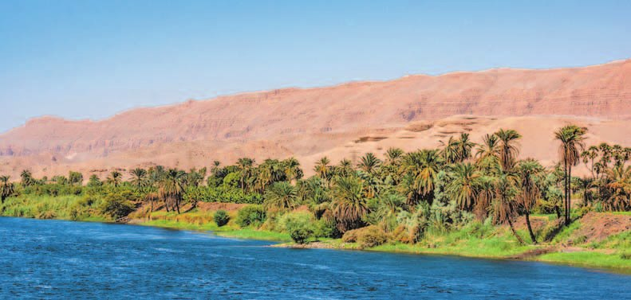
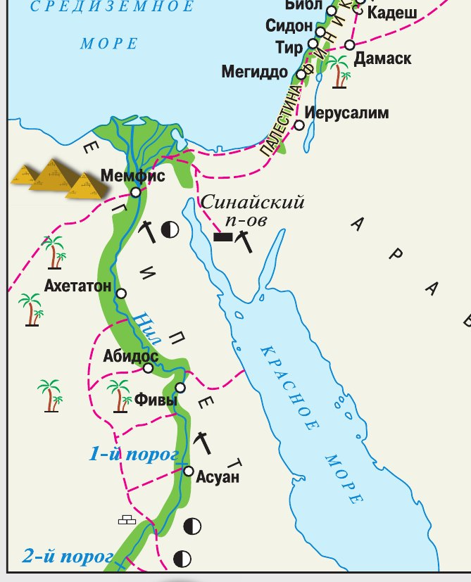
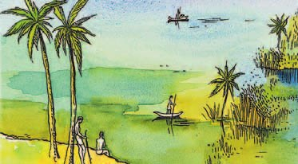
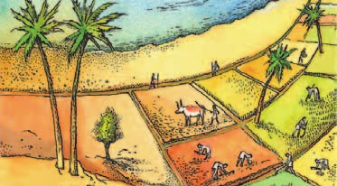
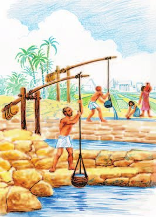
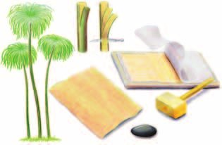
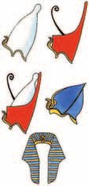

Открытие Древнего Египта
Одна из самых древних появилась на северо-востоке Африки — в долине реки Нил. Это государство называют Древним Египтом.
Сами египтяне называли свою страну — «Чёрная земля». По цвету почвы в долине. А пустыню вокруг они называли «красной землёй».
Удивительно, но учёные открыли Древний Египет совсем недавно — в конце XVIII (18) — начале XIX (19) века. В 1798 году французский полководец Наполеон Бонапарт пошёл войной на Египет, и вместе с армией туда поехали учёные.
Они нашли . Надписи на нём потом помогли разгадать египетскую письменность.
Ещё о Египте рассказывают письменные источники: египетские тексты и книга греческого историка . Примерно в 450 году до н. э. он побывал в Египте и описал природу этой страны, обычаи и занятия её жителей, их культуру и веру. В его записях много интересных легенд и мифов.
Одна из самых древних цивилизаций возникла на северо-востоке Африки в долине реки Нил. Это государство называют Древним Египтом.
В Древнем Египте жители называли свою страну Та-Кемет («Чёрная земля»), по цвету плодородной почвы долины Нила, в противоположность «красной земле» пустыни.
Научное открытие Древнего Египта началось в конце XVIII (18) — начале XIX (19) века в ходе завоевательного похода французского полководца Наполеона Бонапарта в Египет в 1798 году. Его армию сопровождали учёные. Одной из величайших находок, сделанных ими, был Розеттский камень. Надписи на камне позволили впоследствии расшифровать египетскую письменность.
Важнейшую информацию о Древнем Египте дают письменные источники. Это прежде всего египетские тексты и труд древнегреческого историка Геродота. Приблизительно в 450 году до н. э. он побывал в Древнем Египте и описал природу этой страны, обычаи и занятия её жителей, их культуру и религиозные верования. Записи Геродота содержали много интересных легенд и мифов о далёкой стране.
- С чем связано начало открытия Древнего Египта?
1. Почему египетские надписи сумели прочитать только после похода Наполеона?
2. Геродот приехал в Египет около 450 года до н. э. А единое государство появилось около 3000 года до н. э. Сколько лет было Египту, когда Геродот его увидел?
3. Почему именно военный поход стал началом научного открытия Египта?
Великая река на севере Африки
Жители считали Нил «рекой, дающей жизнь». И не преувеличивали: без этой реки Древний Египет был бы пустыней.
Каждый год в июле вода начинала быстро подниматься. Нил выходил из берегов и затоплял всю долину, а в ноябре возвращался в своё русло. Это .
Откуда столько воды? В горах Эфиопии тает снег, оттуда течёт приток Нила.
Посчитаем: с июля по ноябрь — это четыре месяца. Каждый год, четыре месяца подряд, поля египтян были под водой. А потом вода уходила и оставляла подарок.
Этот подарок — плодородный . Из-за его цвета египтяне и называли свою землю чёрной. Она давала высокие урожаи.
Там, где Нил впадает в Средиземное море, русло разветвляется на рукава и получается треугольник. Эту территорию назвали .
Жители страны считали Нил «рекой, дающей жизнь». Без этой величественной реки Древний Египет превратился бы в пустыню. Ежегодно в июле вода начинала стремительно подниматься, и Нил выходил из берегов, затопляя речную долину, а в ноябре возвращался в своё русло. Это природное явление было вызвано активным таянием снега в горах Эфиопии. Оттуда течёт приток Нила.
В месте впадения Нила в Средиземное море русло реки разветвляется на рукава, образуя треугольник. Эту территорию назвали дельтой.
Разливы приносили на берега Нила плодородный ил. Из-за цвета, который придавал ил почве, египтяне называли её чёрной землёй. Она давала высокие урожаи.

Чтобы вода расходилась по полям поровну, египтяне строили и рыли — по ним вода текла на поля и в сады.
А если воду надо было поднять выше — на верхние поля или в посёлок — использовали особое приспособление, .
На илистой почве вдоль Нила росли финиковые пальмы, акации, виноград и высокий тростник — .
В пустыне, на каменистых плато, египтяне добывали медь — из неё делали инструменты и оружие. Там же брали камень для дворцов и храмов. Оттуда привозили полудрагоценные камни — сердолик и бирюзу — и драгоценный металл золото. А там, где в пустыне были источники воды, располагались цветущие .
Чтобы обеспечить равномерное распределение влаги, египтяне строили дамбы и рыли каналы, по которым вода текла на поля и в сады. Если воду нужно было поднять на верхние поля или в поселения, использовали особые приспособления — шадуфы.
На илистой почве вдоль полноводного Нила росли финиковые пальмы, акации, виноград, высокий тростник — папирус и другие растения.
На расположенных в пустыне каменистых плато египтяне добывали медь, из которой изготавливали инструменты и оружие, а также камень для строительства дворцов и храмов. Оттуда привозили полудрагоценные камни — сердолик, бирюзу и драгоценный металл золото. В тех местах в пустыне, где находились источники воды, располагались цветущие оазисы.
▲ Рассмотри иллюстрации: какими работами заняты древние египтяне?


Рисунки подписаны в учебнике «Земледельческие работы в долине Нила».

▲ Объясни, как, по твоему мнению, действовал шадуф.

- Что значили разливы Нила для египтян?
4. Почему египтяне называли Нил «рекой, дающей жизнь», а не просто большой рекой?
5. Поля были под водой четыре месяца в году. Почему для египтян это было хорошо, а не бедой?
6. Зачем египтянам понадобились дамбы, каналы и шадуфы, если вода приходила сама?
7. Медь, камень и золото были в пустыне. Почему же люди селились не там, а у реки?
Верхний и Нижний Египет
Древний Египет делился на две части. В дельте Нила располагался Нижний Египет, а выше по течению, в долине, — Верхний.
Примерно за 4 тысячи лет до н. э. в долине Нила появились первые объединения общин. Их принято называть , то есть областями. Всего их было около сорока.
Почти тысячу лет номы воевали между собой. К концу 4-го тысячелетия до н. э. они объединились в два крупных государства: Верхний Египет и Нижний Египет.
Около 3000 года до н. э. правитель Верхнего Египта подчинил себе Нижний Египет и стал «Владыкой обеих земель».
Правитель Верхнего Египта носил белую корону, правитель Нижнего — красную. А двойная бело-красная корона, которой венчались все правители начиная с Мины, стала символом объединённого Египта.
На границе Верхнего и Нижнего Египта фараон основал город . Он стал столицей единого Египетского государства: отсюда было удобно управлять и севером, и югом.
Древний Египет делился на две части: в дельте Нила располагался Нижний Египет, выше по течению в долине — Верхний.
Примерно за 4 тысячи лет до н. э. в долине Нила появились первые общинные объединения, которые принято называть номами (областями). Всего было около 40 номов. На протяжении почти тысячи лет они нередко враждовали между собой. К концу 4-го тысячелетия до н. э. номы объединились в два крупных государства: Верхний Египет и Нижний Египет. Около 3000 года до н. э. правитель Верхнего Египта Мина подчинил себе Нижний Египет и стал «Владыкой обеих земель».
Правитель Верхнего Египта носил белую корону, правитель Нижнего — красную. Двойная бело-красная корона, которой венчались, начиная с фараона Мины, все правители, стала символом объединённого Египта. На границе Верхнего и Нижнего Египта фараон основал город Мемфис, ставший столицей единого Египетского государства. Отсюда было удобно управлять как севером, так и югом.

8. Верхний Египет — на юге, Нижний — на севере. Почему так, ведь на карте север всегда сверху?
9. Первые номы появились примерно за 4 тысячи лет до н. э., а объединились они около 3000 года до н. э. Сколько времени прошло между этими событиями и чем оно было заполнено?
10. Мина был правителем Верхнего Египта. Почему же он сделал столицей не родной юг, а город на границе двух частей?
11. Почему символом объединённого Египта стала именно двойная бело-красная корона, а не одна из двух?
Подведём итоги
- Объясни, как образовалось единое государство Древний Египет.
- Как ты понимаешь слова древнего историка, что «Египет укреплён со всех сторон самой природой»?
Отрывок из древнего гимна Нилу.
Слава тебе, Нил, выходящий из этой земли,
Приходящий, чтобы оживить Египет!
Тайно руководствуемый, тьма во дне,
Хвалят его спутники его.
Орошающий поля, сотворённый Ра,
Чтобы всех животных оживить.
Напояющий пустыню далеко от воды,
Роса его спускается с небес.
Сформулируй ответ на главный вопрос параграфа — какие природные условия повлияли на создание Древнеегипетского государства? Приведи два-три довода.
Проверь себя
Нажимай по очереди — от самого древнего к самому близкому к нам.
1. Как сами египтяне называли свою страну?
2. Что приносил разлив Нила на поля?
3. Что такое дельта?
4. Зачем нужен был шадуф?
5. Кто объединил Верхний и Нижний Египет?
6. Какой город стал столицей единого Египта?
Расскажи вслух
Как открыли Древний Египет
- Где он находился: северо-восток Африки, долина Нила. Сами египтяне звали страну Та-Кемет — «Чёрная земля».
- Конец XVIII (18) — начало XIX (19) века, поход Наполеона в 1798 году, учёные при армии, Розеттский камень и расшифровка письменности.
- Письменные источники: египетские тексты и Геродот, который приехал около 450 года до н. э. и описал природу, обычаи, занятия и веру египтян.
Нил и его разлив
- «Река, дающая жизнь»: без неё Египет был бы пустыней.
- В июле вода поднимается, в ноябре возвращается в русло — четыре месяца поля под водой. Причина: тает снег в горах Эфиопии.
- Разлив оставляет плодородный ил — это и есть «чёрная земля». Дельта, дамбы, каналы, шадуф.
Чем богат Египет
- На илистой почве: финиковые пальмы, акации, виноград, папирус.
- Из папируса делали материал для письма: полоски решёткой, под грузом склеивались в лист, лист сворачивали в свиток.
- В пустыне: медь на инструменты и оружие, камень для дворцов и храмов, сердолик, бирюза, золото. У источников воды — оазисы.
Как появилось единое государство
- За 4 тысячи лет до н. э. — около сорока номов, почти тысячу лет они воевали.
- К концу 4-го тысячелетия — два царства: Верхний Египет (юг, выше по течению, белая корона) и Нижний (дельта, красная корона).
- Около 3000 года до н. э. Мина объединил обе земли, двойная бело-красная корона стала символом, столицей стал Мемфис на границе.